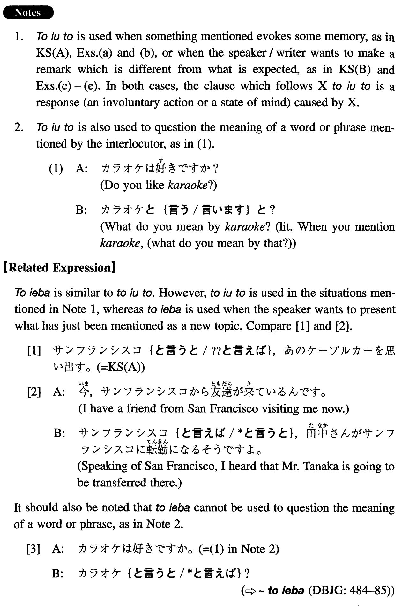

←
DoJG
→
と言うと
(I. 492)
Example sentences
(ksa).
サンフランシスコ
と言うと
、あのケーブルカーを思い出す。
When you mention San Francisco, I remember those cable cars.
(ksb).
日本語を話す
と言うと
聞こえはいいんですが、実は簡単な挨拶が出来るだけなんです。
It sounds impressive when I say that I can speak Japanese, but the fact is that all I can do is exchange simple greetings.
(a).
パリ
と言うと
、誰でも真っ先にあのエッフェル塔を思い浮かべるだろう。
When someone mentions Paris, the (literally: that) Eiffel Tower is the first thing likely to come to everyone's mind.
(b).
柔道
と言うと
、毎日練習した学生時代を思い出す。
When it comes to judo, I remember my school days when I used to practice it every day.
(c).
漫画
と言うと
馬鹿にする人もあるが、あれはあれで面白いのだ。
Some people ridicule comics (literally: Some people despise you when you mention comics), but comics are interesting in their own way.
(d).
東大卒
と言うと
偉そうに聞こえるが、私は勉強なんか全然しない劣等生だったんです。
It sounds great when I say that I am a graduate of the University of Tokyo, but I was (in fact) a poor student who didn't study at all.
(e).
会社を辞めた
と言うと
体裁がいいんですが、彼は本当は辞めさせられたんですよ。
It sounds good when he says that he quit his company, but the truth of the matter is that he was fired (literally: was made to quit).
Formation
(i)
Noun
と言うと
長崎
と言うと
When it comes to Nagasaki
(ii)
Sinformal
と言うと
家を買った
と言うと
If I say that I’ve bought a house
